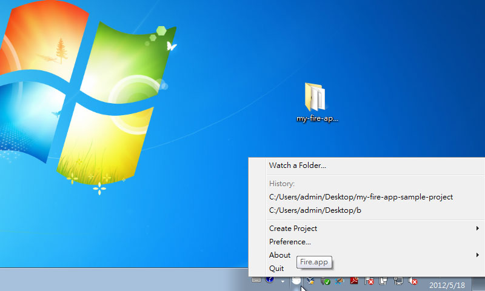
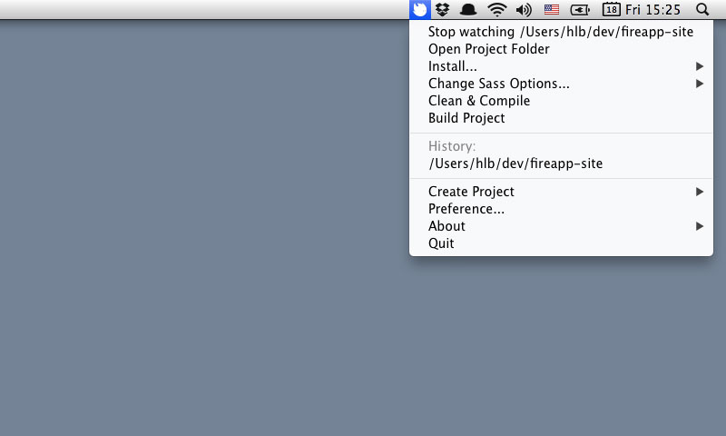
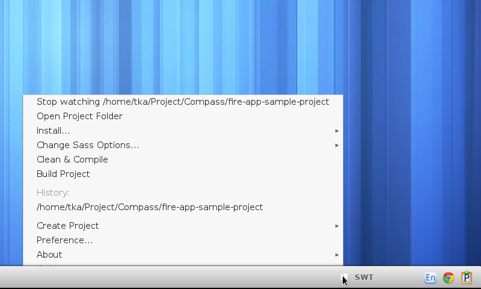
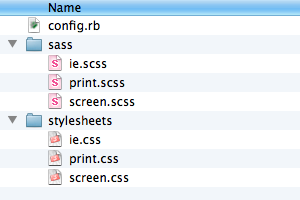
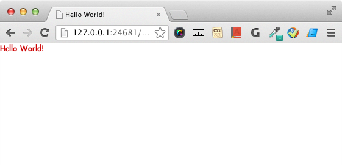
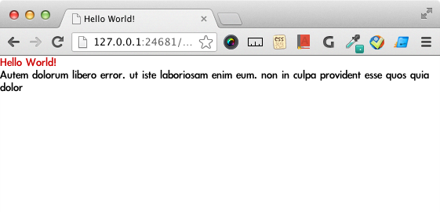

快速入門指南
下載與開啟
購買 Fire.app 後，附有下載連結的 email 將會寄至購買時填寫的信箱。所有 1.x 版的更新下載連結亦會透過 email 提供。
請透過連結下載符合自己作業系統的 Fire.app 檔案，並將檔案解壓縮。可參考下列對應於所使用作業系統之說明：
Windows
解壓縮檔案後會得到一個包含 Fire.app 所需檔案之資料夾，可將此資料夾搬移至想放置的位置，執行 Fire-app.exe 即可啟動 Fire.app 並看見灰色的小 icon 出現在右下角的工作列中。
Mac OS
解壓縮檔案後會得到一個檔名為 Fire.app 的檔案，可搬移至想放置的位置。執行此 app 便可看見灰色的小 icon 出現在 menu bar 。
Linux
解壓縮後會得到一個包含 Fire.app 所需檔案之資料夾，可將此資料夾搬移至想放置的位置，執行 run.sh 即可啟動 Fire.app 並看見灰色的小 icon 出現在 menu bar 。
註: 因 Fire.app 以 Java 撰寫，啟動時可能花費數秒，請耐心等待。
建立專案
要使用 Fire.app 建立專案時，只需點選 Fire.app icon，再從 "Create Project" 選單中選取自己想建立的專案類型，輸入專案資料夾名稱後點擊儲存即可建立新專案。
若沒有特別想使用的 framework，建議選擇 "compass" -> "project" 即可建立一個已包含 sass 檔案的專案，預設即載入 compass reset 。
（註： "Create Project" 選單中的 "Fireapp Example" 一項並非可使用的 framwork，而是直接建立一個 Fire.app 範例專案在指定的資料夾中，供使用者參考此範例中各種 Fire.app 的應用方法。）
輸入專案名稱並點擊儲存後，畫面上將出現一個對話框顯示專案已成功建立。

當專案被 Watch 時 Fire.app 的 icon 會由灰色轉為彩色，此時除了可以使用 Fire.app 所提供的 Web Server 在瀏覽器中看到目前專案的呈現畫面外，當 Sass 、 CoffeeScript 檔案被變更時，Fire.app 便會自動產生出相應的 CSS 和 JavaScript 檔案。
以建立 compass 專案為例，建立專案後之資料夾內容如下：

awesome-website/
sass/ // Sass 檔案夾
screen.scss
...
stylesheets/ // 預設的 CSS 輸出資料夾
...
.sass-cache/ // 隱藏的 sass cache 資料夾，請勿變更
config.rb // Compass 設定檔，請勿刪除
寫入專案內容及預覽
在專案資料夾中新增一個 index.html ，寫入一些內容如 Hello World! 後在瀏覽器中打開 http://127.0.0.1:24681/index.html 便能看見剛剛新增的頁面在瀏覽器中呈現的樣子。
補上 html 的其他部分以便載入由 Sass 檔生成的 CSS 檔案。範例如下：
<!DOCTYPE html> <html> <head> <meta charset="UTF-8"> <title>Hello World!</title> <link href="/stylesheets/screen.css" media="screen" rel="stylesheet" /> </head> <body> <h1>Hello World!</h1> </body> </html>
並在相對應的 /sass/screen.scss 中寫入測試用的 CSS，例如：
h1 {
color: #cc0000;
}
因為 CSS 相容於 SCSS 語法，此處寫一般的 CSS 即可。切換至瀏覽器並重新整理便可看見呈現結果：
使用樣板語言
透過 Fire.app ，只需使用對應的副檔名即可撰寫樣板語言。例如將前面撰寫的 index.html 更名為 index.html.erb 即可插入 ERB 樣板語言的語法，以便使用樣板語言的功能。
更改副檔名後可以試著在 h1 下面加上生成假文段落用的 Helper <%= lorem_paragraph %>：
<!DOCTYPE html> <html> <head> <meta charset="UTF-8"> <title>Hello World!</title> <link href="/stylesheets/screen.css" media="screen" rel="stylesheet" type="text/css" /> </head> <body> <h1>Hello World!</h1> <%= lorem_paragraph %> </body> </html>
加入後切換至瀏覽器重新整理，便可看見假文已經出現在畫面中：
關於樣板語言和 Fire.app 支援的 Helper 可參考說明文件：
生成靜態檔案
完成網站後，可使用 Build Project 功能生成網站的靜態檔。點擊 Fire.app icon 並選擇 "Build Project"，便可看見專案資料夾中出現了一個以 build_ 開頭加上時間戳記為名稱的資料夾，裡面即會包含此專案生成的所有靜態檔案。